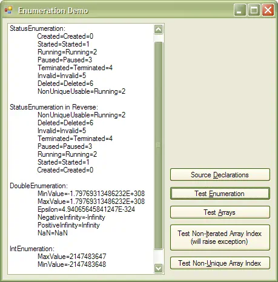

Epigraph:
The science represented by myself gives us strict and unambiguous answer: may be.
A & B Strugatsky, Tale of the Troika
Contents
1 Introduction
This article is the first article of the small series of articles on enumeration types I'm presenting to CodeProject members:
- The present article
- Human-readable Enumeration Meta-data
- Enumeration-based Command Line Utility
- Bitwise Enumeration Editor for PropertyGrid and Visual Studio
The limitations of enumeration types are rooted in .NET platform architecture rather than in C# (the language I use in my code samples and implementation of my solution). Nevertheless, I prefer calling them language limitations, by two related reasons. First and foremost, the limitations of the platform could be compensated by language features; in all cases, this is ultimately the language to be blamed for insufficient expressive power, even though unmatched expressive power of one language would cause compatibility problems with others (compare F# with other .NET languages, for example). Secondly, every API like the one representing .NET class library can be considered as a language in the broader sense of this word.
The purpose of this work is to compensate the lack of desired features by offering three generic types: one will allow for iteration through static members of its type argument effectively converting any enumeration type into enumerable container supporting complete enumeration semantics; the other two will allow for indexing of arrays. Both features are implemented with small footprint and reasonable performance.
Consider simple enum declaration (borrowed from Wikipedia article on enumerated type):
enum CardSuit { Clubs, Diamonds, Spades, Hearts, }
Wouldn’t the following look like a much anticipated feature?
foreach(CardSuit item in CardSuit) {
}
When we try to understand why foreach construct cannot work with our enumeration, we will find that it requires working set to implement IEnumerable. This is quite a shocking fact that enum types do not implement IEnumerable.
Enumeration types are not enumerable!
This fact is hard to understand, because the ability to enumerate can be considered as an inherent trait of enumeration types, as suggested by the term itself. This trait is well supported in some other languages like Ada, Delphi Pascal (most direct predecessor of C# and .NET; foreach support introduced with Delphi 2005), Java, etc.
More than that, using enumeration type as an array index is also very natural. Consider the following Pascal declaration:
suitCount: array[CardSuit] of integer;
Introduction of enumeration in ANSI C has generated a whole line of syntactically similar languages lacking fully-fledged enumeration semantics that would be natural to this construct due to its properties and set of operations. In essence, what is called enumeration or enum in these languages does not present real enumeration types. This fact still could be understood when C or C++ are considered: in these languages with their archaic linkage and include construct enumeration types played the role of mere set of integer constants to be used through a single-place declaration, eliminating a need in separate value definition. For more modern languages like C# the lack of enumeration semantics looks like just yet another historical casus of C ancestry.
2 Background: Life Before Enumeration Class
The new enumeration and indexing features are based on generic class Enumeration designed to serve as enumerable container based on enumeration types. Two more generic classes are based on Enumeration functionality and used for enumeration-based array indexing: EnumerationIndexedArray and CartesianSquareIndexedArray.
Before offering my solution, I need to provide some background on .NET enumeration types. I don’t want go to as far as making it comprehensive though. Instead, I am going to illustrate enumeration work on code snippets mostly related to iterating through some set of enumeration values and discuss related problems.
I do understand that not everyone needs to use my solution, because, after all, having extra code is an extra hassle. I also don’t want to exaggerate the importance of my comprehensive solution, but I want my readers to compare it with some simpler ad-hoc techniques, to be able to make a right choice. That’s why I’ll start from explanation of those simpler techniques under the title “Life before Enumeration Class”.
2.1 Simplest Iteration Loop
Given the above declaration of CardSuit, the iteration loop can be written quite simply:
for (CardSuit loopVariable = CardSuit.Clubs;
loopVariable <= CardSuit.Hearts;
loopVariable++) {
}
for (CardSuit loopVariable = CardSuit.Hearts;
loopVariable >= CardSuit.Clubs;
loopVariable--) {
}
This code snippet shows that comparison, increment and decrement operators are applicable to enumeration, so there is no need in type casting of enumeration values to their integer representations and back.
The main problem of this code is supportability. If the purpose of this code is the iteration through full set of enumeration members, it will be broken when a new CardSuit member is added at the end of previous declaration or inserted at the beginning. If either Hearts or Clubs member is deleted, the code will not compile, which is easier because it makes the problem immediately detectable. In all cases, any modification of enumeration type declaration will require review of all its uses, which is enough to call it a support nightmare.
2.2 Using Length Descriptor
There is a simple technique used to alleviate the supportability problem illustrated above. This technique is well known among C/C++ developers. Let us add one auxiliary member to CardSuit declaration:
enum CardSuit {
Clubs = 0, Diamonds, Spades, Hearts,
Length,
}
Assuming that the underlying integer value of a first member is always zero, it solves the problem of adding and removing “semantic” members:
for (CardSuit loopVariable = 0;
loopVariable < CardSuit.Length;
loopVariable++) {
}
However, it makes reverse iteration a bit more complex:
CardSuit length = CardSuit.Length;
for (CardsuitWithLengthDescriptor loopVariable = length--;
loopVariable >= 0;
loopVariable--) {
}
The first statement used to calculate initial value for loop variable is needed because the decrement operator can be applied to a variable but not to a static field.
Of course, another way to iterate would be using an integer loop variable instead of enumeration combined with appropriate type casting. It can be used for all kinds of iterations and makes inverse iteration a little simpler:
for (int loopVariable = (int)CardSuit.Length - 1;
loopVariable >= 0;
loopVariable--) {
CardSuit loopItem =
(CardSuit)loopVariable;
}
Is it any better? I don’t think so. Even though it simplifies the look of inverse iterations but makes supportability problem worse. One reason is the particular integer type: the enumeration declaration syntax allows for specification of underlying integer type. This type should be kept in sync with the type of loop variable. Who would volunteer to take care about that?
2.3 Using Suprema Descriptors
The iteration technique described above could be a bit generalized to allow minimum value of the iterated members other than zero. It also makes reverse iteration simpler, making forward and reverse iterations look symmetric. To achieve this, let’s add two more auxiliary members:
enum CardSuit {
Clubs, Diamonds, Spades, Hearts,
Length,
First = 0,
Last = Length - 1,
}
for (CardSuit loopVariable = CardSuit.First;
loopVariable <= CardSuit.Last;
loopVariable++) {
}
for (CardSuit loopVariable = CardSuit.Last;
loopVariable >= CardSuit.First;
loopVariable--) {
}
The above code snippets for iteration loops will allow certain class of modifications of CardSuit declaration without looking at the code where it is used: any “semantic” members can be added or removed, first member of the declaration can be assigned integer value other then zero (the value of First must be modified in sync). Also, it is easy to further generalize the declaration to have extra “semantic” enumeration members not involved in the iterations.
In all cases, however, iteration will work as expected only if iteration is performed over the set of consecutive integer values.
2.4 Iterating Bit Sets
Bitwise operators on enumeration types are very convenient and often used for implementation of set algebra and more complex calculations. For these purposes, Enumeration types basically use underlying integer values of the power of 2 for their members, sometimes combined with other members.
For some applications, it is desirable to iterate through the bits of a bit set (for example, to generate documentation on each bit flag automatically). The iteration techniques demonstrated above require underlying integer values to be consecutive, so they cannot use such enumeration types directly.
An auxiliary “bit position” enumeration type helps to work around this limitation. Let’s consider (very simplified) example of text Search Options:
enum SearchOptionBitPosition {
MatchCase,
SearchBackward,
UseRegularExpressions,
WholeText,
Length,
}
[System.Flags] enum SearchOptions {
Default = 0,
MatchCase =
1 << SearchOptionBitPosition.MatchCase,
SearchBackward =
1 << SearchOptionBitPosition.SearchBackward,
UseRegularExpressions =
1 << SearchOptionBitPosition.UseRegularExpressions,
WholeText =
1 << SearchOptionBitPosition.WholeText,
}
SearchOptions options =
SearchOptions.MatchCase | SearchOptions.UseRegularExpressions;
bool caseSensitive = (options & SearchOptions.MatchCase) > 0;
bool ignoreCase = (options & SearchOptions.MatchCase) == 0;
for (SearchOptionBitPosition loopVariable = 0;
loopVariable <= SearchOptionBitPosition.Length;
loopVariable++) {
SearchOptions option = (SearchOptions)(1 << (int)loopVariable);
}
Of course, things like double type cast can invite errors. However, the biggest problem of this approach is that bit positions must be consecutive values. In many cases, these values are also not consecutive; sometimes they cannot be modified because they come from a third-party library. This is typical enough for unmanaged enumeration types used via P/Invoke.
2.5 Mocking Programming by Extension
So far, my presentation of C#/.NET enumeration background was limited by the following scope: I promise to solve each and every problem described so far through the generic classes I developed.
In this section, I want to discuss yet another enumeration problem not related to iterations. Unfortunately, I cannot see any solution good enough to be worth bothering about it. I simply want to use the occasion to show and discuss most simple technique to close the topic. Of course, I would greatly appreciate if someone could give me a better idea.
The problem in question is the lack of extension mechanism (like inheritance) or any mechanism for creation of derived types based on value types. They are many well-known scenarios where derived value types are used (notably in Ada), but for enumeration types the extension looks especially tempting. Imagine the following declarations:
enum CommandSet { New, Open, Save, SaveAs, }
enum ExtendedCommandSet : CommandSet { Import, Export, }
Ideally, a variable of ExtendedCommandSet should be assignment-compatible with any CommandSet value, but not visa versa.
All I can advise is the following technique:
enum ExtendedCommandSet {
New = CommandSet.New,
Open = CommandSet.Open,
Save = CommandSet.Save,
SaveAs = CommandSet.SaveAs,
Import, Export,
}
Note that assignments inside ExtendedCommandSet declaration using values from the scope of different enumeration type are allowed without type cast, in contrast to assignment operators. Come to think about, this is a very convenient yet safe design feature of the language.
Unfortunately, assignment between the two types should always use type cast, but this technique guarantees expected values. The declaration mimicking extension is still a bit tedious, but keeping it in sync with its “base” type is easy enough if those types are placed one next to another.
Another problem could be incompatible underlying integer types. For example, the following declaration will not compile:
enum CommandSet {
New = -1,
Open = int.MinValue,
Save = int.MaxValue,
SaveAs = byte.MaxValue + 1,
}
enum ExtendedCommandSet : byte {
New = CommandSet.New,
Open = CommandSet.Open,
Save = CommandSet.Save,
SaveAs = CommandSet.SaveAs,
Import, Export,
}
This problem cannot occur if the underlying integer type for “derived” type is the same or a wider type than that of the “base” enumeration type.
Nick Polak put forward an interesting approach for support of imitation of enumeration type "inheritance" based on his Visual Studio add-on in his article Implementing Enumeration Inheritance using Roslyn based VS Extension.
2.6 Iteration Problems
Even though all the techniques shown above do work, the code looks ugly. Also, the approach needs special care in order to avoid off-by-one errors.
Working with a set of consecutive values only is a serious limitation. In essence, it limits the techniques to the enumeration types where the integer values of members are not specified and do not matter. Again, sometime it is not even possible to use consecutive values (see 2.4).
Using the iterations requires considerable discipline of coding, to keep “semantic” and “auxiliary” members apart and in sync. One possible way to do that is to make sure that the names of those “auxiliary” members are reserved for their purpose throughout the project (or even the developer’s team). Apparently, the supportability of such code remains less than perfect.
By some reason, C# enumerations also lack the usual must-have attributes like MinValue and MaxValue members found in all numeric types. Again, this is hard to explain, because these values always exist for every non-empty enumeration type; anyone could obtain those using a call to System.Enum.GetValues method. (The non-empty assumption is important here: there is no way to define MinValue or MaxValue value for types like “enum Empty {}”, but these members could be implemented as static properties raising an exception in case of empty enumeration.) Needless to say, MinValue and MaxValue members would greatly facilitate iterations.
There is yet another more fundamental problem not directly related to iterations. What happens if we try to obtain the name of the enumeration member using something like CardSuit.First.ToString()? See below…
2.7 Problem with Enumeration Member Names
The declaration of CardSuit in the form presented in 2.3 can be used to illustrate the problem with obtaining a name of the enumeration member by its value. Physically, the enumeration values are represented by their underlying integer values. One way to retrieve the name is a call to the method object.ToString, for example:
string first = CardSuit.First.ToString();
Another way to obtain the name is a call to the method enum.GetName; an array of names for an enumeration type can be returned by a call to the method enum.GetNames.
As we know, CardSuit.First == CardSuit.Clubs; that is, this is the case of multiple enumeration members having the same underlying value; so what will be the value of the string first?
I experimented for a while compiling for the target of .NET Platform v. 3.5 and 4. I found that in all cases I tried this method returned the name of the enumeration member declared earlier; in the present case, this is "Clubs". However, I vaguely remembered that with .NET Platform v.2.0 I sometimes observed the opposite situation: CardSuit.Clubs.ToString() == "First". I observed similar results of calling enum.GetName or enum.GetNames. Does it mean that this API does not guarantee certain result of this call? (That is why I’ve chosen that epigraph for this article.)
The confirmation of this guess can be found in MSDN documentation on .NET 4 for the method enum.GetName:
“If multiple enumeration members have the same underlying value, the GetName method guarantees that it will return the name of one of those enumeration members. However, it does not guarantee that it will always return the name of the same enumeration member. As a result, when multiple enumeration members have the same value, your application code should never depend on the method returning a particular member's name.”
The documentation on ToString conducts the same idea using sample code. As to the method GetNames, it looks a little more complex:
“The elements of the return value array are sorted by the values of the enumerated constants. If there are enumerated constants with same value, the order of their corresponding names is unspecified.”
It is not clearly stated how many names this method should return and if repeated string values can be expected. My recent experiment with CardSuit shows that all 7 strings are returned; and all of them are different. Anyway, I would not rely on that.
Effectively, all three methods returns results which in general case could not be considered reliable for many applications.
This is a problem. Simply saying “avoid using identical underlying integer values of different members of the same enumeration type — this is bad practice” is not a valid resolution. In certain cases, using such members is unavoidable. The typical case is using some external API, especially non-managed. In this case,
- underlying integer values really matter and
- identical values are often used.
Why, for example, System.Windows.Forms.MessageBoxIcon.Error and System.Windows.Forms.MessageBoxIcon.Hand have the same underlying integer values? Because, by historical reasons, so was defined in unmanaged Windows API and because System.Windows.Forms.MessageBox functionality rely on this API. Another example is using “auxiliary” members for the purpose explained in 2.3.
Note that my solution based on my class Enumeration does not rely on any of these three methods. Instead, enumeration member information is obtained through Reflection and stored in detailed form (see 3.1, EnumerationItem). This approach is totally free from any kind of ambiguity (see 3.1, 4).
3 Foreground: Using Enumeration Class and Enumeration-indexed Arrays
The previous section is devoted to the techniques we have to use if we do not use the class Enumeration I offer. As I already called that section “Background”, I’m just bound to call next section “Foreground” and finally explain the solution I propose. I’m going to start explanation through the usage and later give an idea of how it works (4). The problems outlined in the Background section should provide enough justification for addressing them in a comprehensive way.
First to describe is the generic class Enumeration<ENUM> and its usage pattern.
3.1 What to Enumerate?
First of all, we need to understand what we really want. This is, essentially, a set of enumerated items and the order of enumeration. It may seem not so trivial if we consider enumeration members assuming any arbitrary integer values. We should not assume that the ordering of those integer values follows the order of the declarations of the enumeration members, not even mentioning limitation to the consecutive values. Moreover, we should not assume one-to-one correspondence between enumeration member names and their respective integer values. The function mapping enumeration members to their integer values is always surjective but not always injective: for every enumeration member, it returns one and only one respective integer value, but the same integer value can be returned for more than one enumeration member.
As there is no way to enforce any rules concerning the underlying integer values corresponding to enumeration members, any assumption on those values would break the functionality of the class Enumeration.
De facto, there are two different integer values associated with every enumeration member (but not with a variable of enumeration type): the first one is zero-base ordering number of the member as it appears in the source code in the declaration of its type; I will call it “natural order”; the second one is the underlying integer value of the member. These two numbers are not always equal. Full run-time information on the enumeration member (indirectly including its natural ordering number) is preserved in the assembly meta-data and represented by the instance of the type FieldInfo. As to the variable of enumeration type, during run-time it is represented only by its underlying integer value; the size of the variable in its unboxed form is exactly the same as the size of its type’s underlying integer type. In this way, it is not always possible to find enumeration member by the value stored in the variable of the enumeration type. This is the root cause of the enumeration member ambiguity problem described in 2.7.
Considering all this, only one conclusion follows: the iteration should be performed in natural order (optionally in reverse order). The underlying integer values should not affect the set of objects obtained via iteration, nor should it affect the order of iteration. Instead, the type of the loop variable should provide all useful information on the enumerated item.
Here is the type declaration:
public sealed class EnumerationItem<ENUM> {
private EnumerationItem() { }
public string Name { get { } }
public Cardinal Index { get { } }
public ENUM EnumValue { get { } }
public object Value { get { } }
}
Note that the instance of this class cannot be constructed directly (not without using Reflection-based tricks, anyway). It is only constructed internally in the Enumeration class.
The type Cardinal is defined by an alias using directive as System.UInt32. The property Index provides an index of the enumeration item generated in natural order (excluding those marked with the attribute NonEnumerable, see below). This property has nothing to do with the integer value assigned to the corresponding enumeration member; if such integer value is needed, it can be obtained as type-casted value from the property EnumValue.
The property Name provides the name of the corresponding enumeration member. This name is defined by exact member name as it appears in the enumeration declaration and is free from the name ambiguity problem described in 2.7, so it is not always the same string as the one returned by EnumValue.ToString().
The purpose of two separate properties EnumValue and Value will be explained in 3.3.
Some enumeration members can be excluded from the set of objects enumerated though iteration. To achieve that, the following attribute can be used:
[AttributeUsage(
AttributeTargets.Field,
AllowMultiple = false,
Inherited = false)]
public class NonEnumerableAttribute : Attribute { }
3.2 Enumeration Usage
Considering one of the CardSuit declarations, the set can be iterated like this:
Enumeration<CardSuit> cardSuiteEnumeration
= new Enumeration<CardSuit>();
foreach (EnumerationItem<CardSuit> item in cardSuiteEnumeration) {
}
To get a deeper understanding of the relationship between EnumerationItem, its underlying enumeration type and its members, you can experiment with them like this:
Type underlyingIntegerType =
Enum.GetUnderlyingType(typeof(CardSuit));
foreach (EnumerationItem<CardSuit> item in cardSuiteEnumeration) {
object intValue = Convert.ChangeType(
item.EnumValue,
underlyingIntegerType);
WriteLine(
"{0}={1}={2}",
item.Name,
item.EnumValue,
intValue);
}
This is a pretty advanced code snippet showing how to obtain all essential information on the enumeration item including its underlying integer value without prior knowledge of exact integer type.
If by some reason the enumeration declaration used some auxiliary members (for example, Length descriptor defined in 2.2 was not removed for the sake of backward compatibility with the code created earlier), the declaration should be modified to exclude them from the iteration sequence:
enum CardSuit {
Clubs, Diamonds, Spades, Hearts,
[NonEnumerable] Length,
}
To get reverse order of iteration, the property IsReverse can be used:
cardSuiteEnumeration.IsReverse = true;
3.3 What if ENUM is not an Enumeration Type?
Now, it’s the time to look at the declaration of the class Enumeration:
public class Enumeration<ENUM> :
IEnumerable<EnumerationItem<ENUM>> {
public Enumeration() { }
public static Cardinal CollectionLength {
get { }
}
public static ENUM First {
get { }
}
public static ENUM Last {
get { }
}
public EnumerationItem<ENUM> this[Cardinal index] {
get { }
public bool IsReverse {
get { }
set { }
}
}
Everything looks clear… Wait a minute! How can we make sure that the type argument is always of the enumeration type, that is, derived from System.Enum? The problem is, the special type System.Enum is not allowed as a generic argument type constraint.
When this problem started bothering me, I suddenly realized that… there is absolutely nothing wrong with using Enumeration class based on any other type, either value or reference one, primitive or not.
For example, let’s apply the same kind of iteration loop to the type double:
static Enumeration<double> doubleEnum
= new Enumeration<double>();
foreach (EnumerationItem<double> item in doubleEnum)
WriteLine(
"{0}={1}",
item.Name, item.Value);
Here is the output:
MinValue=-1.79769313486232E+308
MaxValue=1.79769313486232E+308
Epsilon=4.94065645841247E-324
NegativeInfinity=-Infinity
PositiveInfinity=Infinity
NaN=NaN
Here is why: the Enumeration functionality does not use any knowledge of the nature of the type ENUM, is it an enumeration type or not. Basically, it collects information about all public static fields of the ENUM type (4.1). For example, the each floating-point numeric type defines five public static fields of the same type shown above for the type double.
There only one special feature of the enumeration type taken into account in the code: for every enumeration type, all its public static fields are of the same type, guaranteed. This also holds for some other types, such as all numeric types, but is not guaranteed in general case. This difference is used for different assignment of the values used by the properties EnumerationItem.EnumValue (of the type ENUM) and EnumerationItem.Value (of the type object).
If ENUM is enumeration type, both properties for all enumeration members are of the same type. If ENUM is not an enumeration type, it really depends on each separate public static field of the type: if a field is of the same type as ENUM, the EnumerationItem instance is created exactly in the same way as for enumeration type, otherwise only the value of EnumerationItem.Value contains the real value of the field; in this case the value of EnumerationItem.EnumValue is not informative (assigned using default operator).
3.4 A Note on Flags and Bitwise Operations
The values obtained through bitwise operations on enumeration members (see 2.4) have no special meaning for enumerable functionality or array indexing. If such a value happens to be equal to a declared underlying value of one or more enumeration members of the enumeration type, it will appear in some iteration or can be used to index an array element.
System.FlagsAttribute can be uses with enumeration types. It can only affect the name of the enumeration value returned by the method ToString or System.Enum.GetName and is intended to be used with bitwise operators. As none of those methods is used in the present code, this flag has no effect on the result of iterations or array indexing.
All this is a simple consequence of the general behavior described above. These aspects of enumeration types usually cause a lot of questions and controversies, so I tried to anticipate them.
3.5 Array Indexing
Array indexing usage looks very similar to regular arrays:
EnumerationIndexedArray<CardSuit, double> rating
= new EnumerationIndexedArray<CardSuit, double>();
EnumerationIndexedArray<CardSuit, double> defaultRating
= new EnumerationIndexedArray<CardSuit, double>(1.0d);
rating[CardSuit.Clubs] = 3 / 4;
double defaultValue =
defaultRating[CardSuit.Diamonds];
rating[CardSuit.Length] = 3.1;
double oor = rating[(CardSuit)7];
First generic type argument defines the type of array index; second one defines the array element type. Parameter-less constructor creates an array with all elements set to default value of its element type; the constructor with a parameter assigns all elements to the same value.
The code snippet shown above assumes that it is compiled with the declaration of CardSuit shown in 3.2, the one applying NonEnumerable attribute to its member CardSuit.Length. Internally, the class EnumerationIndexedArray uses Enumeration, so the attribute NonEnumerable applies to the array as well; therefore, the array element indexed by the value CardSuit.Length does not exist. For this case, the most natural behavior is implemented: the exception IndexOutOfRangeException is thrown. If the index is obtained through type-casted integer value, the result of attempt of accessing the array element depends on the value of index: if this value does not belong to any of the declared enumerated members (not marked with the NonEnumerable attribute), the same exception is thrown.
Importantly, the exact underlying integer values attributed to the enumeration members do not matter much. This class works even if two or more different enumeration members are given the same underlying integer values. In this case, the same array element can be accessed through either one of the two (or more) enumeration indices, no matter which one.
3.6 Cartesian Square
Next to the arrays indexed with a single enumeration type index, I want to consider arrays of rank two indexed by two indices of the same enumeration type, which represents a function of a Cartesian Square build on a finite set represented by a set of enumeration values.
One could ask: why taking care of Cartesian Square indexing specifically, why not consider arrays of different ranks with different combination of the types of indices? The answer is: this is because Cartesian Squares are very important in computational practice. Even though the enumeration indexing approach could be further generalized to cover more complex combinations of ranks and index types, it’s hard to imagine the complexity of this task can be well paid off. At the same time, there is no problem to implement any particular type of array structures based on Enumeration functionality along.
As to Cartesian Square, it is fundamentally important because it can be used to represent a binary relation defined as a subset of a Cartesian Square: a Boolean array on a Cartesian Square represents a relation between elements of a set represented by enumeration members.
Functions of Cartesian Square of different types allows to define multisets and all kinds of finite graphs which have many fundamental uses in mathematics, computer science and common computation tasks. Perhaps, one of the most important applications would be the implementation of Finite-State Machines (FSM). In our case, a Finite-State Machine can be built on a set of states represented by an enumeration type.
Class CartesianSquareIndexedArray works in a way very similar to EnumerationIndexedArray: first generic type argument defines array index type (presumably of enumeration type), with the same type used for both indices; second argument defines the type of function over Cartesian Square. The Cartesian Square itself is defined by the Cartesian product of the set defined by the enumeration and the same set. Note, that if the second argument is Boolean, such CartesianSquareIndexedArray can be interpreted as relationship, which is defined as a subset of Cartesian Square, or as an oriented graph defined over the set of nodes, each node corresponding to separate enumeration member, and each graph edge corresponding to those ordered pairs of indices where the array value is equal to True.
Now, let me illustrate this construct by example of very simple Finite-State Machine, representing, for example, states of some thread and the diagram of Transitions between the states. Strictly speaking, pure mathematical Finite-State Machine should use Boolean array element type, exactly as in the Cartesian representation of relationship explained above, with True value representing allowed Transitions and False value representing prohibited (empty) Transition. However, in practice it is useful to use much more advanced array element type to carry essential technical detail on each Transition. In my example, this is a delegate which could define some action to be performed on each Transition. For example, an instance of such delegate could invoke hardware control of some physical machine or provide graphical animated presentation of the Transition.
public enum State { Initial, Running, Paused, Aborted, Finished, }
public class EmptyTransitionException : System.ApplicationException {
internal EmptyTransitionException(State from, State to)
: base(FormatException(from, to)) {
this.fFrom = from;
this.fTo = to;
}
static string FormatException(State from, State to) {
return string.Format(
"State transition from {0} to {1} is not allowed",
from, to); }
public State From { get { return fFrom; } }
public State To { get { return fTo; } }
State fFrom, fTo;
}
public delegate void StateTransition(State from, State to);
public abstract class StateMachine {
public StateMachine() {
StateGraph[State.Initial, State.Running] = Start;
StateGraph[State.Running, State.Paused] = Pause;
StateGraph[State.Paused, State.Running] = Resume;
StateGraph[State.Running, State.Aborted] = Abort;
StateGraph[State.Paused, State.Aborted] = Abort;
}
public void FireTransition(State from, State to) {
StateTransition action = StateGraph[from, to];
if (action == null)
throw new EmptyTransitionException(from, to);
else
action(from, to);
}
protected abstract void Start(State from, State to);
protected abstract void Stop(State from, State to);
protected abstract void Pause(State from, State to);
protected abstract void Resume(State from, State to);
protected abstract void Abort(State from, State to);
CartesianSquareIndexedArray<State, StateTransition>
StateGraph =
new CartesianSquareIndexedArray<State, StateTransition>();
}
In this example, StateGraph is defined on a Cartesian Square of the set of nodes defined by enumeration type State. CartesianSquareIndexedArray is build over this Cartesian Square with array elements of the delegate type. This array represents a graph of Transitions between nodes, each node represented by a separate State member. The purpose of the abstract class StateMachine is to build the instance of the State Transition Graph (just for example this is hard-coded in constructor) and provide a level of indirection calling of the Transition actions (a set of abstract methods in the above example): each action is called via FireTransition expecting two State arguments. This way, implementation of the action can be agnostic to Transition graph, and StateMachine agnostic to Transition actions. Again, this example is highly simplified.
4 How It Works
All the delicate aspects of working with enumeration types and ideas useful for implementation of enumerable behavior are already described above. There is almost nothing special about the implementation itself. Please look at the source code for all the details.
In this section, I’ll try to outline the key techniques of the solution.
4.1 Collecting Static Member Data
The enumerable behavior is based on the meta-data on the public static fields of the ENUM type collected and digested into an array of the EnumerationItem<ENUM> instances (see 3.1) using Reflection. This relatively slow process is not repeated every time Enumeration is constructed. Instead, it happens when the generic class Enumeration<ENUM> is instantiated with new ENUM type. In this way, there is only one static portion of digested ENUM meta-data per type. Different instances of Enumeration share this singleton of meta-data, which consist of the array of the EnumerationItem<ENUM> instances plus few additional static members, in particular, those used for thread safety (4.3) and array indexing (4.4).
The enumeration members we need are the public static fields. This is how to obtain them:
static FieldInfo[] GetStaticFields(Type type) {
return type.GetFields(BindingFlags.Static | BindingFlags.Public);
}
Remember, it works for any type, whether it is enumeration or not. These two cases are distinguished by two different properties EnumerationItem.EnumValue and EnumerationItem.Value, as described in 3.1 and 3.3. Here is how:
static void BuildEnumerationCollectionCore() {
Type type = typeof(ENUM);
Bool isEnum = type.IsEnum;
FieldInfo[] fields = GetStaticFields(type);
List<EnumerationItem<ENUM>> list = new List<EnumerationItem<ENUM>>();
Cardinal currentIndex = 0;
for (Cardinal jj = 0; jj < (Cardinal)fields.Length; jj++) {
FieldInfo field = fields[jj];
object[] attributes =
field.GetCustomAttributes(typeof(NonEnumerableAttribute), false);
if (attributes.Length > 0) continue;
object objValue = field.GetValue(null);
if (objValue == null) continue;
ENUM enumValue = default(ENUM);
if (isEnum)
enumValue = (ENUM)objValue;
else {
if (objValue is ENUM)
enumValue = (ENUM)objValue;
}
string name = field.Name;
list.Add(new EnumerationItem<ENUM>(name, currentIndex, objValue, enumValue));
currentIndex++;
}
EnumerationCollection = list.ToArray();
FCollectionLength = (Cardinal)EnumerationCollection.Length;
}
Note that isEnum is calculated before the loop and when it is true, the current member type checked up (relatively slow method) is not done in the loop, because an enumeration type guarantees that all its fields are of the same type.
The meta-data singleton is initialized based on lazy evaluation. The initialization shown above is performed when any operation is requested for the first time for a given ENUM type. As some operations of the Enumeration are static (like CollectionLength), this may happen even before the call to the constructor.
4.2 Enumerator
The Enumeration instance supports foreach construct and behaves as an enumerable container through implementation of the interface IEnumerable with only method to be implemented: IEnumerable.GetEnumerator.
The implementation of the method IEnumerable.GetEnumerator returns an instance of the inner class Enumerator. It implements the interface IEnumerator using digested meta-data singleton. There is one important thing to note: the enumerator current position should be reset to initial position (depending also on the current value of the predicate IsReverse) every time new foreach loop starts again. The only place to trigger this reset is the method IEnumerable.GetEnumerator.
4.3 Thread Safety and Performance
Thread safety is optional, defined by the conditional compilation symbol THREAD_SAFE_ENUMERATIONS.
There is nothing wrong in using non-thread-safe version of the code even in the multi-threaded application.
Even though the singleton static meta-data is shared between different instances of Enumeration which may belong to different threads, the access to this singleton is read-only. The only target of the locking is guarding the initialization of this singleton, which is rarely done concurrently. In other words, if the application is multi-threaded and using non-thread-safe version of the code, it should prevent concurrent initialization in the Enumeration meta-data singletons. One simple way to make sure this rule is observed is to perform initializations of meta-data singleton at least once per each ENUM type in main thread before any other threads are started. To secure such initialization, it is enough to call Enumeration constructor or read any of its static properties, at least once per each ENUM type to be used.
May be the above thorough considerations are redundant: my performance tests did not show any measurable time loss due to thread safety when only the iteration time is measured. However, thread safety makes repeated Enumeration constructor call more than twice as slow. (In all tests, the first call of the constructor was made before the loop, to measure the meta-data singleton initialization separately; initialization time per enumeration member was 300-350 times slower than one iteration (40 ns), but locking time virtually does not contribute to initialization time due to slow Reflection-based code: initialization for one enumeration type with 1024 members took 15-50 ms, which is also good enough, because the total number of enumeration members in the application is usually much smaller.) For nearly all practical purposes, using thread-safe compilation of the code will not compromise performance.
Anyway, for multi-threaded applications compiled with thread-safe or non-thread-safe version of the code, instances of Enumeration should not be shared between different threads; otherwise the application itself should take responsibility for synchronization. In other words, there is no locking used to safeguard concurrent use of Enumeration instances regardless of the compilation condition.
4.4 Array Indexing
As it is demonstrated on the sample in 3.5, the array indexing is based on the generic class EnumerationIndexedArray<INDEX, ELEMENT>. Internally, this class uses the static part of the class Enumeration<INDEX>, which provides a dictionary used for quick search of the index of the instance of the class EnumerationItem in the digested meta-data by the value of the type INDEX. This dictionary is created and populated based on lazy evaluation: even when the digested meta-data stored statically by the correspondent Enumeration<INDEX> type is already initialized, the dictionary is not created until the first time the access to an array element is attempted.
The same exact technique is used for indexing of the Cartesian Square based arrays; only the underlying array is of rank 2. Both array classes share the same method of finding of integer array index based on enumeration value. This method GetIntegerIndexFromEnumValue(ENUM index) is implemented internally in the class Enumeration.
5 Building the Code and Compatibility
The code is provided for Microsoft .NET versions 2.0 to 4.0. The solutions Enumerations.2005.sln, Enumerations.2008.sln and Enumerations.2010.sln allow building the code using the corresponding version of Microsoft Visual Studio.
The code can be built in batch mode using batch files build.2005.bat (build using MSBuild.exe of Microsoft .NET versions 2.0 targets the same version), build.2008.bat and build.2010.bat (build using MSBuild.exe of Microsoft .NET versions 3.5 and 4.0, targets version 3.5). Batch build does not require installed copy of Visual Studio or any other development environment — it uses .NET redistributable package only.
5.1 Compatibility: Microsoft .NET
Project versions for Visual Studio 2008 and 2010 are mutually compatible, that is, MSBuild.exe of Microsoft .NET versions 3.5 can build Enumerations.2008.sln and, the other way around, MSBuild.exe of Microsoft .NET versions 4.0 can build Enumerations.2010.sln. Please edit path to MSBuild.exe in your batch file to use available version of .NET.
The solutions Enumerations.2008.sln and Enumerations.2010.sln use exactly the same set of source files, including project files. The solution Enumerations.2005.sln, however, needs special project files (suffixed with “.2005.csproj”). The structure of the project Enumerations.2005.csproj is slightly different, because it uses special version of main source file, linked from Enumerations.CLI2.0-compatible\Enumeration.cs. I had to create a special version of this file, because v. 2.0 has to use System.Threading.ReaderWriterLock class instead of more efficient ReaderWriterLockSlim supported in v. 3.5 and 4; and these classes have different interfaces. Anyway, thread safety and the difference in performance of thread-safe versions between v. 2.0 and v. 3.5 and later are not so important by the reasons explained in 4.3.
5.2 Compatibility: Mono for Linux
All the software built for .NET v.2.0 target was successfully tested for binary compatibility with Mono v. 1.2.6 and v. 2.4.4; and testing of software built for .NET v.3.5 target confirmed binary compatibility with Mono v. 2.4.4. I’ve done all tests on Ubuntu Linux v. 8.04.
6 Conclusions
Lack of support of enumeration for enumeration types — in the form of interface IEnumerable support of some other — is quite an archaic feature of .NET and C#, so it even does not provide justification of the term “enumeration”. There are at least three ways of overcoming this problem: extension of .NET CLI, extension of one or more CLI languages or encapsulation of predefined data types in classes implementing the desired functionality.
Practically, only the third approach was in my reach; so the present work is a successful attempt to achieve the desired effect.